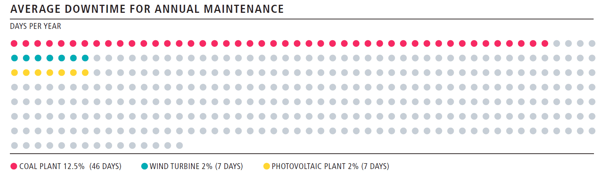
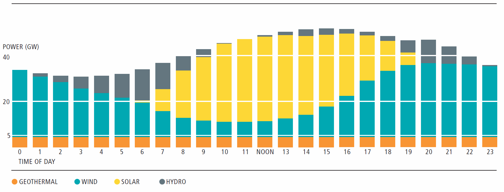
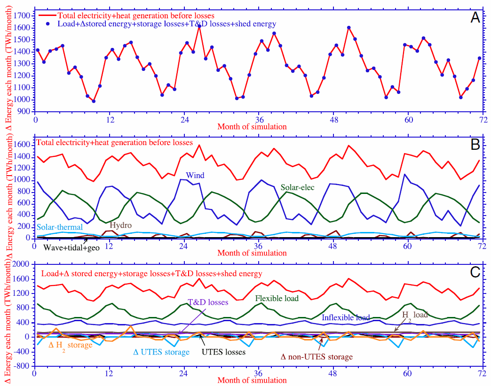
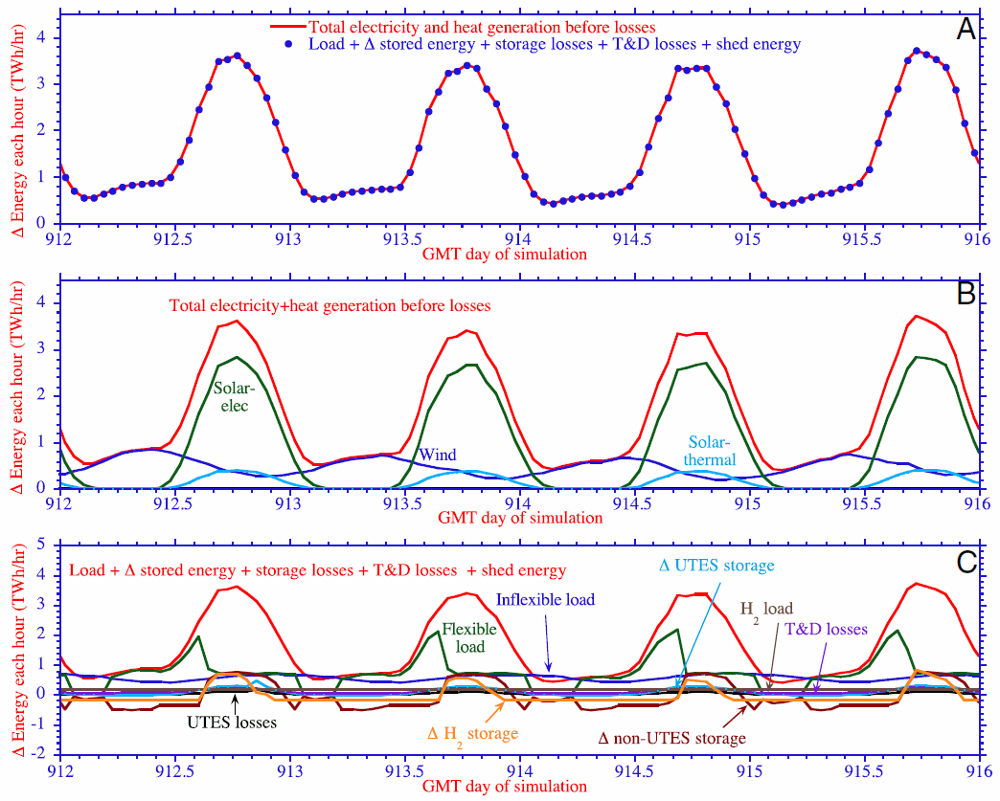
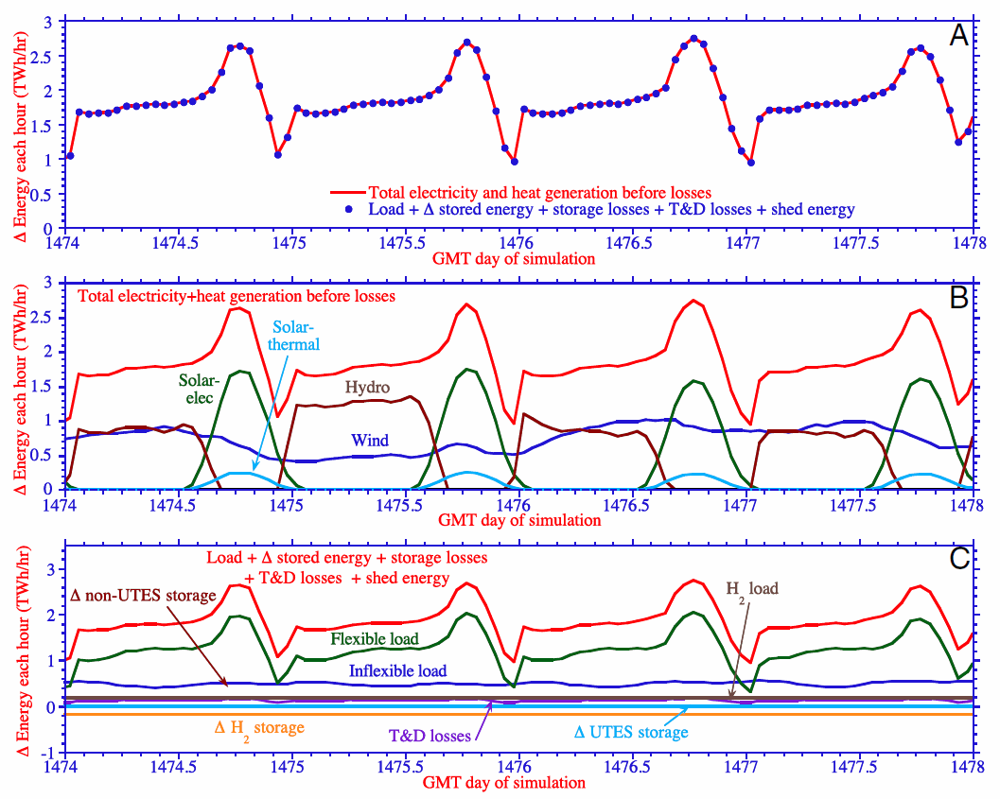
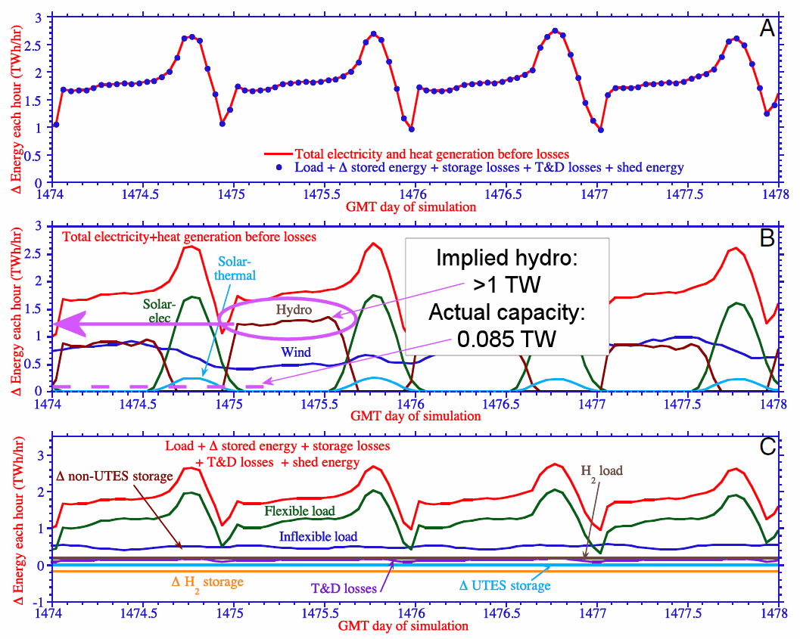
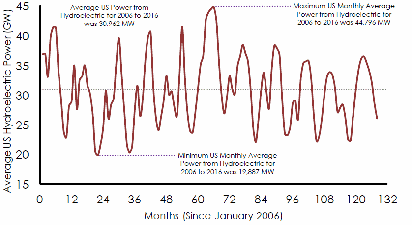

| Pielke | Alternate |
|---|---|
|
|
Conclusion: Providing energy will be a big challenge whether we use clean energy or fossil fuels.
| 2010 | 2030 | |
|---|---|---|
| US | 2.5 | 2.8 |
| World | 12.5 | 16.9 |
Note: 1 TW = 90 quads/year

| Recommended | Not recommended |
|---|---|
|
|





